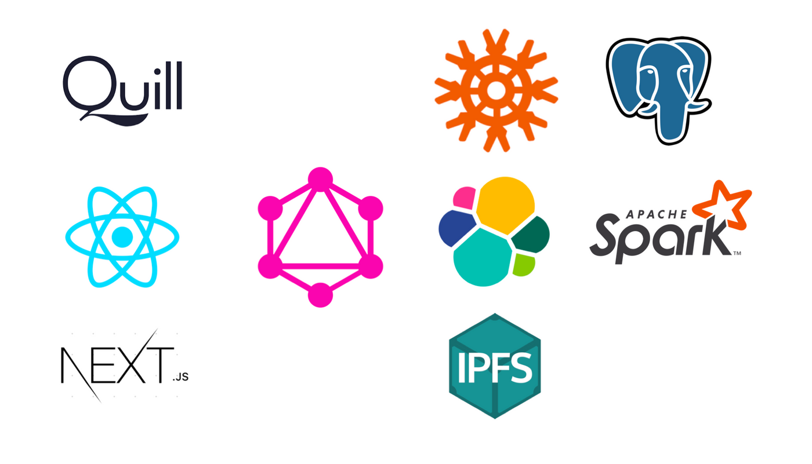

工程日誌 3/19：如何建立分布式的版權生態？
2019 · 3 · 19

平台更新
在過去一年的內測中，Matters通過原型產品開始了內容發現與金流體系的探索。同時，我們也觸到了原型的瓶頸，所以在過去的四個月內，Matters一邊重組技術團隊，一邊對網站進行了重寫，准備處理更大規模的用戶與流量，與更快速的迭代與探索。
在UI/UX方面，我們重新思考了產品邏輯，給網站賦予了全新的面貌，成為你現在看到的界面。但新的界面意味著新的棱角和問題，需要我們一起重新打磨與試錯。
在系統性能方面，服務器數據庫一直是Matters原型的瓶頸。在這一層，我們從適合原型開發的MongoDB數據庫遷移到了高性能的PostgreSQL數據庫，存儲模型也從半結構化數據（semi-structured）遷移到了關系模型數據（relational model），為日後的擴展打下基礎。
在內容發現方面，除了主頁中兼顧用戶動態與運營篩選的瀑布流外，我們也通過協同過濾（collaborative filtering）模型搭建了一個簡易的文章推薦引擎，在每篇文章之後為讀者推薦類似的文章。和推薦功能一起，搜索功能也遷移到了ElasticSearch引擎，提供更快更精確的搜索結果。
在推薦引擎與內容搜索的背後，是Matters後台開始搭建的數據管道。數據管道每日調用Spark集群重新訓練推薦引擎，適應平台不斷更新的內容和讀者不斷變化的興趣。同時，數據管道為Matters的數據工程師打開了窗口，得以了解用戶習慣、優化產品、並探索發現內容的新方式。
但在內容發現中，技術是把雙刃劍：協同過濾這樣的發現機制既能為讀者找到感興趣的文章，也能造成同溫層的固化和假新聞的傳播。在利用技術協助內容發現的同時，Matters也會展開產品與社區層面的探索，引入策展人（curator）角色，為內容發現的過程加入人性，也為媒體口碑的建立和注意力經濟的分潤提供新的模式。
全新的API
在發現機制與數據隱私方面，我們需要用戶與我們共同試驗與反思。這個試驗的重要部分，也許是數據和算法的使用規則。在說明文檔齊全之後，Matters將會開放我們全新的GraphQL API，方便感興趣的用戶調取公共內容，一同探索公開與隱私的權衡。
新版的代碼結構中另一個重要改變便是查詢語言GraphQL的引入。UI的快速迭代需要一個穩定的數據模式，從15年逐步流行開來的GraphQL正好提供了前後端之間的查詢語言和類型系統，為UI提供了可靠的數據模式定義。
更重要的是，相比傳統的RESTful的API風格，GraphQL不依據HTTP或某個特定傳輸協議設計，更適合傳輸方式多樣的分布式系統。同時，因為大量分布式項目都基於有向無環圖（Directed Acyclic Graph）數據結構，基於圖（graph）的GraphQL非常適合從分布式網絡調取數據。類似於The Graph這樣的工具項目在快速成熟中，讓開發者直接向IPFS、以太坊等分布式資源發起GraphQL請求，進一步簡化了開發流程。
GraphQL也讓Matters得以逐步遷移為分布式應用。當Matters部分功能有了成熟的分布式實現後，前端可以通過模式拼接（schema stitching）的方式復寫HTTP部分的邏輯。存儲於IPFS或以太坊的Matters內容數據也可以由此成為公共資源開放使用，協助生態系統成長。
從網站平台到分布式網絡
Matters平台雖然經歷了重新設計與開發，但是產品邏輯並未改變。平台仍是一個傳統的網頁，用戶仍需經由域名服務器查找到Matters服務器IP，再與服務器之間通過HTTP建立連接。盡管每一篇文章都已經發布至IPFS，囿於網頁形式，用戶仍然受制於中心化服務，用戶信息和金流體系也都還存儲在中心數據庫中。
但在重構的過程中，我們開始了分布式網絡的准備與鋪墊。Matters網站會持續作為內容發現的中心化窗口， 探索不同的內容發現與分潤的方式；與此同時，這個窗口會通向更大的網絡，任何人都可以加入，建立自己的窗口與社區、擁有自己的數據與回報。
接入一個分布式的網絡，意味著用戶需要下載一個客戶端，不管是以桌面程序還是手機App的形式。對於互聯網，這是網頁瀏覽器；BitTorrent或者eDonkey網絡，這是迅雷、電騾、快播等客戶端；對於比特幣或者以太坊，這是電子錢包。
對於Matters，這個客戶端需要讓用戶能夠不經中心節點交易、瀏覽多媒體網頁，讓創作者自主創作、打包、定價、分發與分潤。通過分布式賬本技術，我們能夠將創作者與讀者直接相連，既能像BitTorrent一樣高效地分發數據，又能像Amazon等中心化的服務一樣維持一個良性的版權生態。長遠來看，這個客戶端也需要和諸多快速興起的分布式內容庫聯通，讓用戶能夠隨時調取屬於全人類的共同知識庫，不管是維基百科、科研數據還是研究論文。
在Matters網站繼續進行迭代的同時，Matters工程團隊將會著手試驗這樣一個客戶端，從桌面版開始。盡管具體的產品邏輯和形態還在討論之中，技術層面已經有了不少線索。分布式存儲功能會由目前已經投入試驗的IPFS提供，而分布式賬本功能則會是目前相對成熟的區塊鏈形式（與合作伙伴Likecoin聯手）。同時，我們在原型階段會采用Electron.js平台，以便復用網站平台中成熟的UI與業務邏輯代碼。
新版上線之前，我們已經將Matters所有文章重新發布至IPFS，一方面調整了版式，另一方面對圖片也進行了分布式存儲。同時，我們也重新設計了文章鏈接：文章鏈接末尾長度為49的字符串，是文章元數據在IPFS中的哈希值，包含文章的作者、發布平台、文章指紋等信息。例如，用戶可以復制文章的元數據哈希值，替換到以下鏈接（或者任何IPFS節點）中並打開 ”https://ipfs.io/api/v0/dag/get?arg=${哈希值}/author”，就可以看到作者的相關信息。這意味著，我們設想的桌面版本可以不經服務器，直接打開Matters文章的鏈接，調取作者與內容數據。
\

不過，這裡的構想僅僅是大致脈絡，產品邏輯也還在探討之中。一個能夠支持版權的分布式網絡是一種嶄新的交互形態，技術與設計層面都有許多未知需要摸索。我們希望與用戶一起來定義這種全新的交互，為中文網絡世界提供更可靠的傳播工具和更合理的游戲規則。
盡管分布式網絡有潛力帶來一個更加穩定、開放與公平的賽博空間，對於能夠選擇中心化服務的單個用戶，分布式應用並不一定帶來體驗的提升，這是分布式應用項目的難題。但在特定的應用場景中，分布式網絡是不可替代的工具，正如跨境轉賬之於比特幣、文件共享之於BitTorrent、物聯網之於無線網狀網絡。
Matters設想的內容與作者的分布式網絡，甚至在全球互聯網割裂為國家局域網時，仍能正常運作；但在網絡信息相對自由的今天，我們的產品不僅要解決技術問題，更要有新穎的商業模式和多樣的應用場景，才能與傳統互聯網產品競爭。
這些問題需要更大範圍的論證與不同領域的思路，問題的答案也該由社區共同決定。所以，Matters的產品與工程團隊會在開發之余，以這樣日志的方式向大家同步最新想法，希望以此激起討論和暢想，更希望獲得社區中各路高手的協助。既關乎技術路線，也關乎產品形態。
在你的想像中，這樣一個分布式網絡需要什麼樣的工具，又有什麼樣合適的應用場景？
从信息开源的角度讲，不存在控制它的传播修改删除等等行为。
这个基本立场就不合适。
但从出生到成长的路径，恰恰是区块连技术要解决的问题。